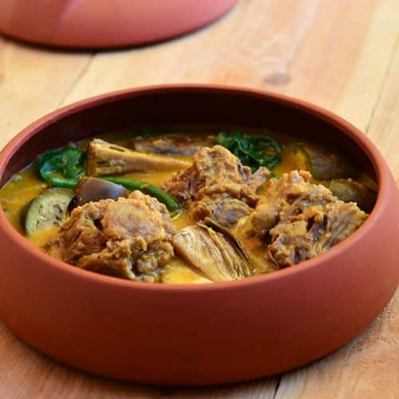

Kare Kare Recipe

Description:
Kare Kare is a Filipino dish which is really good ngl. It
consists of a savory peanut buttery stew and typically some meat
oxtail, pork belly, or beef. Also present are vegetables like bok choy and/or
egglpants
Ingredients:
- 3 lbs oxtail cut in 2 inch slices you an also use tripe or beef slices
- 1 piece small banana flower bud sliced
- 1 bundle pechay or bok choy
- 1 bundle string beans cut into 2 inch slices
- 4 pieces eggplants sliced
- 1 cup ground peanuts
- 1/2 cup peanut butter
- 1/2 cup shrimp paste
- 34 Ounces water about 1 Liter
- 1/2 cup annatto seeds soaked in a cup of water
- 1 piece onion chopped
- 1 tbsp garlic minced
Steps:
- In a large pot, bring the water to a boil
- Put in the oxtail followed by the onions and simmer for 2.5
to 3 hrs or until tender (35 minutes if using a pressure cooker)
- Once the meat is tender, add the ground peanuts, peanut butter,
and coloring (water from the annatto seed mixture) and simmer for 5 to 7 minutes
- Add the toasted ground rice and simmer for 5 minutes
- On a separate pan, saute the garlic then add the banana flower, eggplant,
and string beans and cook for 5 minutes
- Transfer the cooked vegetables to the large pot (where the
rest of the ingredients are)
- Add salt and pepper to taste
- Serve hot with shrimp paste. Enjoy!
Return to Home